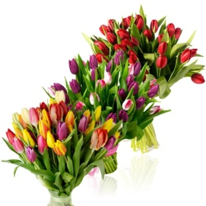

Buchet de lalele
Disponibil in florariile Splendid din 1 martie pana in 30 mai

Prezentare
Buchet splendid continand 30 de lalele. Inaltimea plantelor este de 30 ... 40 cm. Culori la alegere.
Pastrare
Durata de viata : aproximativ 5 zile. La primire si apoi tot a doua zi taiati varfurile cozilor.
Limbajul florilor...
Forme frumoase si culori vii pentru orice ocazie.